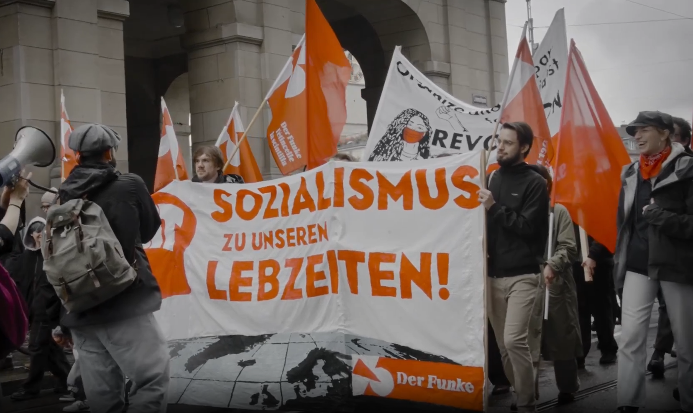

Über uns
Die Revolutionäre Kommunistische Partei (RKP) ist eine politische Organisation in der Schweiz, die für die Überwindung des Kapitalismus und den Aufbau einer klassenlosen Gesellschaft kämpft. Wir setzen uns für eine Welt ein, in der Solidarität, Gleichheit und Gerechtigkeit die Grundlagen des Zusammenlebens bilden. Als Teil der internationalen kommunistischen Bewegung streben wir eine Zusammenarbeit mit revolutionären Organisationen auf der ganzen Welt an. Gemeinsam kämpfen wir für die Befreiung der Arbeiterklasse und aller Unterdrückten. Unsere Arbeit basiert auf einer Analyse der Widersprüche des kapitalistischen Systems und der Überzeugung, dass wahre Veränderung nur durch eine revolutionäre Umgestaltung der Gesellschaft möglich ist. Ein wichtiger Schwerpunkt unserer Arbeit ist die politische Bildung und die Verbreitung revolutionärer Ideen durch unsere Zeitung und die Plattform kommunismus.ch. Wir engagieren uns in internationalen Kampagnen gegen Imperialismus, Umweltzerstörung und soziale Ungleichheit. Die Internationale, als weltweiter Zusammenschluss von revolutionären Kräften, ist für uns ein zentraler Bezugspunkt. Gemeinsam mit unseren Genossinnen und Genossen weltweit arbeiten wir daran, eine gerechte und befreite Gesellschaft zu schaffen."